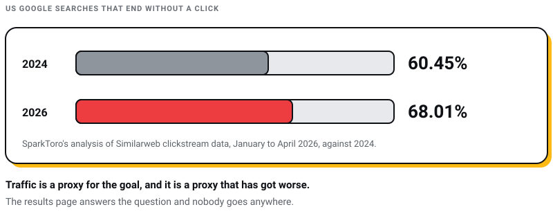
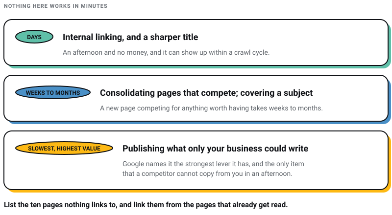

WEB DEVELOPMENT
WEB DEVELOPMENT
AI Website Builders vs Custom Development: Where the Shiny Tools Actually Break
AI website builders are fast, but are they right for your business? Discover where they excel, where they fail, and when custom development is the…

I run a studio in Salt Lake, Kolkata that gets paid to make sites people find, so let me start by taking something off your list. There is no such thing as an LSI keyword. Google’s John Mueller said so on 30 July 2019, in a sentence with no hedging in it: “There’s no such thing as LSI keywords — anyone who’s telling you otherwise is mistaken, sorry.” A tool that offers to find them for you is selling a category Google has publicly denied having.
That is the shape of a lot of traffic advice. A tactic survives because it gets repeated, not because anybody went back to the primary source. So every recommendation below comes with the reason attached, and where the reason turned out to be wrong I have said so.
Nothing here works in minutes. Traffic moves when a page deserves to be found, and deserving takes a few weeks at best. The fastest genuine win on most sites I audit is internal linking, which costs an afternoon and no money. The slowest is publishing something only your business could have written, which is also the one Google names as the strongest lever it has.
The rest is housekeeping. Useful housekeeping, but nobody should sell you a quarterly retainer for it.
One more thing before the list. Traffic is not the goal, it is a proxy for the goal, and it is a proxy that has got worse. SparkToro’s analysis of Similarweb clickstream data put 68.01% of US Google searches ending without a click between January and April 2026, against 60.45% in 2024 (Search Engine Land, 9 June 2026). The results page answers the question and nobody goes anywhere. If you optimise the proxy hard enough you end up with a page that gets visits from people who leave immediately, which reports beautifully and sells nothing.

These four circulate constantly. Here is what the primary sources say instead.
| The claim | What is actually true |
|---|---|
| “Update your pages with LSI keywords”, using a tool that finds them for you. | LSI keywords do not exist. John Mueller, 30 July 2019, quoted above. The tool sells a category Google has publicly denied having. |
| “Aim for a score of at least 85 on desktop and mobile.” | A number somebody made up. Lighthouse publishes three bands: 0 to 49 poor, 50 to 89 needs improvement, 90 to 100 good. There is no 85, and Google says a perfect 100 is “extremely challenging to achieve and not expected” (Chrome for Developers). |
| “Search engines often use CTR as a ranking factor.” | Not confirmed by Google, ever. Gary Illyes’ explanation at Pubcon in 2016 was that clicks are “incredibly noisy” and “really, really hard to clean up”. Search Engine Journal’s review of the evidence finds “no compelling evidence to support the idea that Google uses CTR as a direct search ranking signal” (Search Engine Journal, 17 October 2021). |
| “Place your links at the top of your guest post so readers see them.” | Google’s spam policies list “links with optimized anchor text in articles, guest posts, or press releases distributed on other sites” as link spam (Google Search Central, last updated 15 May 2026). The tactic was a description of how to get caught. |
This is first because it is free, it is entirely under your control, and on most sites I audit it is the cheapest change that actually moves anything. Almost every site has a handful of pages carrying all the attention and a long tail that nothing points at. Linking the tail from the head takes an afternoon.
Two rules I hold my own team to. Write the anchor text as a description of the destination, so “our brand strategy process” rather than “click here”. And link because a reader at that sentence would genuinely want the other page, not because you have a monthly internal-link quota. The second rule is the one people break.
Keyword cannibalisation is when several of your own pages chase the same search. The usual shape is a homepage, a service page and three blog posts all written against the same phrase, so Google has to pick one and none of them is the obvious answer.
The fix is consolidation, not more content. Pick the page that should own the subject, fold the useful parts of the others into it, and redirect them. You will publish fewer pages and rank better with them, which is an uncomfortable trade for anyone whose contract specifies four posts a month.
Before keyword research, audience research. Sales calls, demo recordings, support tickets, the questions people ask in the first ten minutes of a meeting. That is where the phrases live, and they are almost never the phrases a keyword tool suggests.
Google is unusually direct about why this matters. Its generative-AI optimisation guidance, published 15 May 2026, says unique, compelling and useful content will influence your presence “more than any of the other suggestions in this guide”, and its own example contrasts a commodity headline, “7 Tips for First-Time Homebuyers”, with a non-commodity one, “Why We Waived the Inspection & Saved Money” (Google Search Central). The second one is a story only one household could tell. That is the whole distinction.
The same guidance is worth reading for what it tells you not to do. Do not chop your content into fragments for machines to digest, and do not write in a special voice for AI search. Google’s wording is that optimising for generative AI search “is optimizing for the search experience, and thus still SEO”.
The idea behind topic clusters is sound: a set of pages that genuinely covers a subject will pick up searches you never thought to target. What is worth dropping is the framing that makes it sound like a trick. You are not assembling a cluster to game an algorithm. You are answering the eight questions a buyer asks instead of the one with the biggest search volume, and volume is a weaker guide every year. I go through why in my guide to keyword research.
A steady rhythm beats a burst. Increasing output at the cost of quality is worse than publishing nothing, and the quality rater guidelines updated on 11 September 2025 are explicit about where that ends: using automated tools “as a low-effort way to produce many pages that add little-to-no value” should be rated Lowest, no matter how the pages were created.
Speed is worth doing, and the numbers to aim at are published rather than invented. The three Core Web Vitals and their good thresholds are Largest Contentful Paint within 2.5 seconds, Interaction to Next Paint of 200 milliseconds or less, and Cumulative Layout Shift of 0.1 or less, each measured at the 75th percentile of real visits (web.dev).
If your last performance report mentions First Input Delay, it is out of date. INP replaced FID as a stable Core Web Vital on 12 March 2024 (web.dev, 12 March 2024).
Two practical notes. The Lighthouse score in PageSpeed Insights is a lab simulation, and the field data underneath it is what reflects your actual visitors, so read the field section first. And Google’s own page-experience documentation is careful about the size of the prize: Core Web Vitals “are used by our ranking systems”, but good scores do not guarantee good rankings (Google Search Central). Fix the failing metric because slow pages lose people, and treat any ranking movement as a bonus. If the fixes are beyond your team, we do this work at Pixel Street in Kolkata.
Sharper titles and meta descriptions are still worth the hour. What is usually wrong is the reason given for them. You are not raising a ranking signal, because click-through rate is not one. You are getting more of the people who already see you to come over, which is a real gain and a smaller one than it is normally sold as.
Be honest in the title while you are at it. A page that promises more than it delivers wins the click and loses the reader, which is the wrong half of that trade.
If a visitor arrives from an article about rebranding, the page they land on should be about rebranding, not your homepage. Tagging contacts by what they have read and routing them to matching pages is ordinary, unglamorous work that lifts engagement more reliably than most of what gets called growth. It also compounds with the branding work, since a consistent brand presentation across those pages is what makes the second visit feel like the same company as the first.
Schema markup still helps machines read your pages, and it still earns rich results for the categories Google supports. Two of the categories most often recommended for it are dead.
Check the current search gallery before you build anything, because that list is where features quietly disappear from. And structured data is not a requirement for showing up in AI search, whatever your last audit told you.
A standing piece of traffic advice is to drop links to your posts into Reddit and Quora threads. I went and read what both platforms actually do rather than repeating what other posts claim. Outbound links in Reddit posts carry rel="nofollow ugc", and reddit.com/robots.txt currently reads User-agent: * followed by Disallow: /, which is a blanket instruction to crawlers to stay out. Quora’s robots.txt opens with a notice prohibiting use of its content for AI training without a contractual licence, and asks search engines to email for crawl permission.
None of that means avoid these places. It means go for the people. A genuinely useful answer reaches a self-selected audience of exactly the people with your problem, and some of them will look you up afterwards. That is worth an hour a week. It is not a link tactic, and running it as one is how a junior ends up posting promotional replies and getting the account banned.
If links are what you are actually after, I have written the honest version of that argument in my post on backlinks.
Optimising for smart speakers was a fixture of every traffic list for years. The behaviour behind it did not disappear, it moved. Google announced the upgrade from Assistant to Gemini on 14 March 2025 and was still rolling it out into 2026 (Google), and the conversational query that used to go to a speaker now mostly goes to an assistant that answers in prose.
Practically, that changes the writing very little. Long, natural, question-shaped queries were always best served by writing plainly and answering the question near the top. What it changes is measurement, and there are now two places to look.
Neither tells you what a person did after reading about you. Impressions are the metric this era hands you, and anyone selling you a click-through rate for AI answers is selling you a number that does not exist yet.
Internal linking and a genuinely better title can show up within a crawl cycle, so days. A new page competing for anything worth having takes weeks to months. Anybody quoting you a number in minutes is quoting a headline.
Only if the extra pages are things somebody would want to read. Volume at the expense of quality is the specific failure Google’s rater guidelines single out, and I have watched clients double their output and halve their traffic doing it.
No. Optimise the failing Core Web Vital in the field data. The lab score is a useful diagnostic and a terrible target, and chasing the last few points of it is how a week disappears.
Not for Google rich results, which ended on 7 May 2026. Keep a real FAQ on the page if your customers genuinely ask those questions, because it helps the reader. Do not add one purely as markup.
Writing something only your business could have written. Google says so in its own guidance, and it is also the only item here that a competitor cannot copy from you in an afternoon.
Open your analytics, list the ten pages nothing links to, and link them from the pages that already get read. That is the afternoon’s work, and it is the closest thing to a quick win on this page.
Then pick one thing your business knows that nobody else can publish. A price you charge and why. A project that went wrong and what it cost to fix. A number out of your own operations. One of those beats every tactic above it on this page.

We build and run sites from Salt Lake in Kolkata for clients including Coca-Cola, ITC and Marico. If you want the on-page work laid out in order, my SEO checklist is the short version, and talk to us if you would rather not do it yourself.
9 min read 21 cited sources Web Design
Author
Khurshid Alam is the founder of Pixel Street, an AI-native design & development studio. Design thinking on weekdays and spreadsheets on weekends.
He writes about growth, design, and AI, mostly because someone has to say the quiet parts out loud.
WEB DEVELOPMENT
AI website builders are fast, but are they right for your business? Discover where they excel, where they fail, and when custom development is the…
 Web Design
Web Design
A client asked me this on a call last month: “Khurshid, everyone just asks ChatGPT now. Do we even need a website anymore?” He runs a business doing…
 Branding
Branding
From small-time gigs to booming creative industries, web and graphic designers have taken centre stage. Whether you’re a rookie or a design virtuoso…
 Web Design
Web Design
Have you ever visited a website on your phone and found it hard to read or navigate? That’s what happens when a website isn’t designed to fit all…